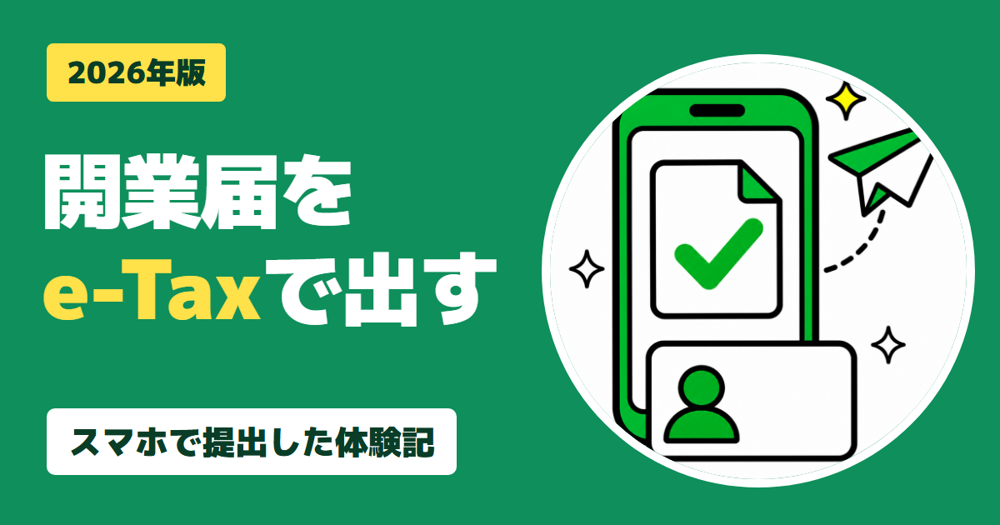
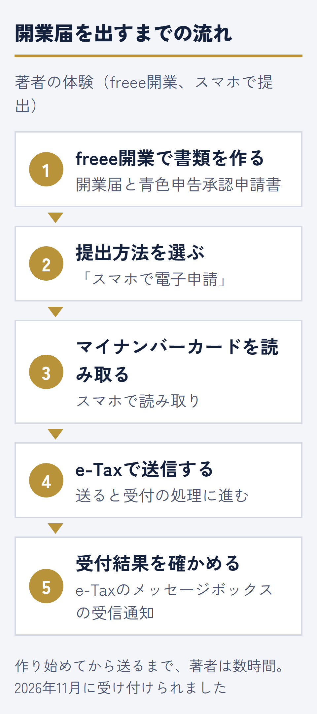
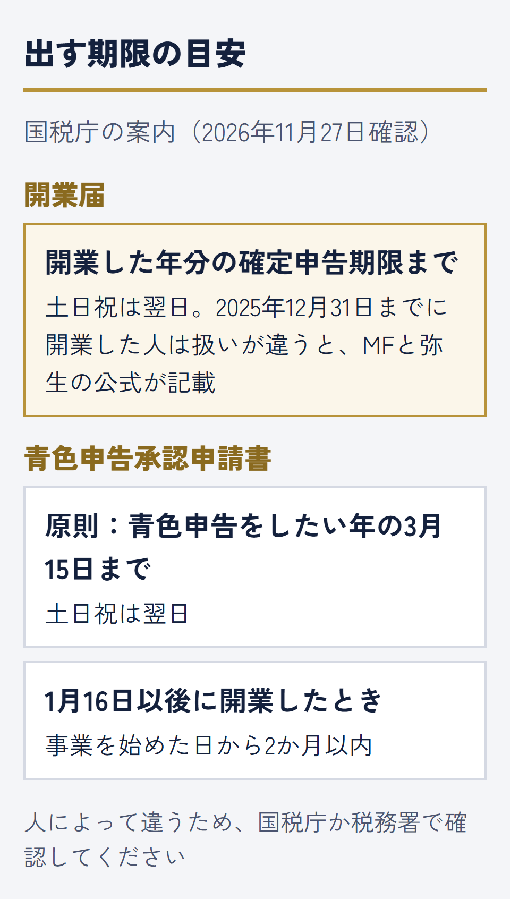
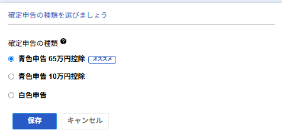
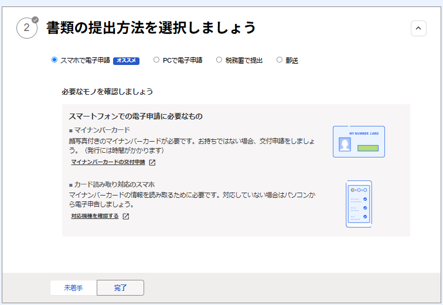
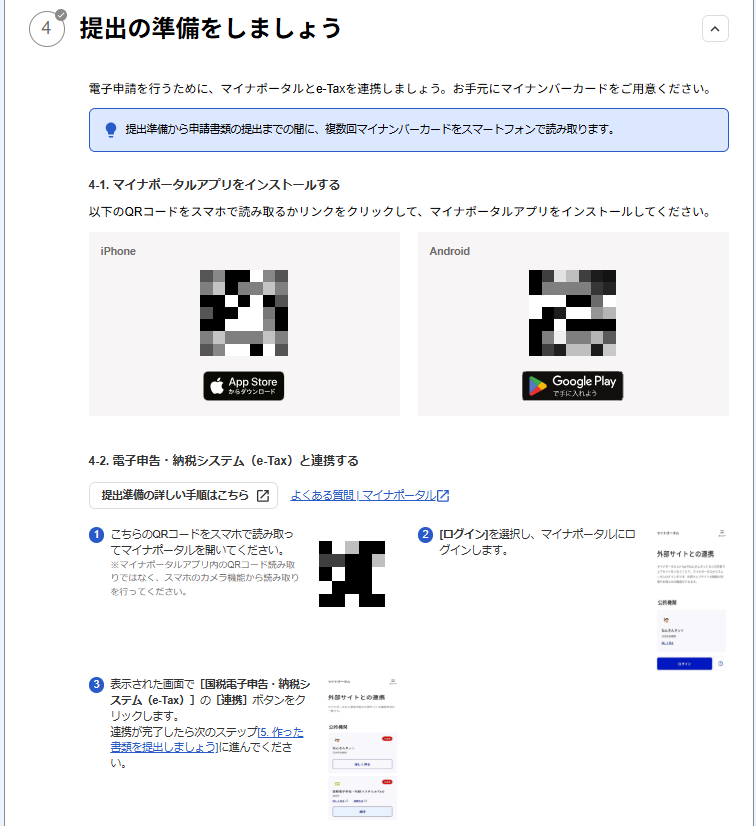
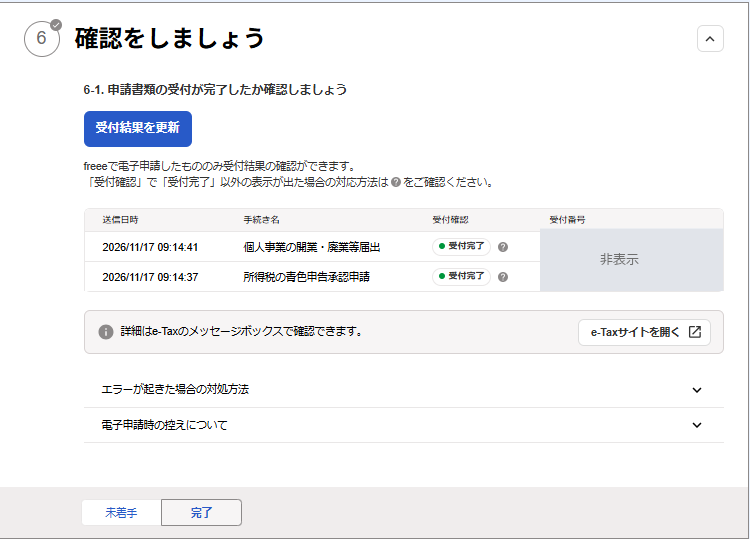
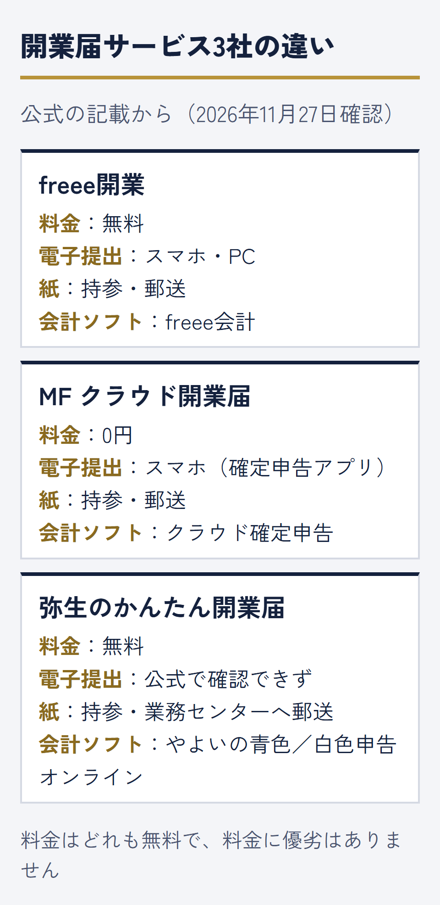

コラム ／ 起業・開業
本記事にはアフィリエイト広告(A8.net)を利用したリンクが含まれます。リンク経由でお申し込みがあった場合、著者が報酬を受け取ることがあります。紹介するサービスの選定と評価は、著者の基準で行っています。
開業届をe-Taxで出すやり方｜freee開業で作ってスマホで提出した流れ【2026年】

著者は、freee開業で開業届と青色申告承認申請書を作り、スマホでマイナンバーカードを読み取って、e-Taxで送りました。作り始めてから送るまでは数時間で、2026年11月に受け付けられています。この記事では、その流れと、提出期限、必要なもの、受付結果の確かめ方を書き、freee、マネーフォワード、弥生の開業届サービスの違いも公式情報で整理します(2026年11月27日に各社公式サイトと国税庁、e-Taxで確認)。
開業届をe-Taxで出す方法を調べると、国税庁の案内、会計ソフト各社の手順、解説サイトが並びます。どれも手順は書いてありますが、実際に出した人の記録は多くありません。この記事は、著者が自分で出した流れを、そのまま記録したものです。
先に、著者の立場を書きます。著者は広告運用とWebの仕事をしている個人事業主で、開業届をfreee開業で作って、e-Taxで電子提出しました。3つのサービスのうち、著者が実際に使ったのはfreee開業だけです。マネーフォワード クラウド開業届と弥生のかんたん開業届は使っていないので、この2社は感想を書かず、公式情報だけで並べます。
書き方のルールも先に書いておきます。提出期限や必要なものは、国税庁とe-Taxの公式ページにあることだけを書きます。画面を載せる場合は、利用者識別番号、氏名、提出先の税務署、受付番号を隠します。手続きの内容は人によって違うため、最後は国税庁、税務署、税理士に確認してください。確認した日は2026年11月27日です。
結論：freee開業で作って、スマホでe-Taxから出した
- 著者は、freee開業で開業届と青色申告承認申請書を作り、スマホでマイナンバーカードを読み取って、e-Taxで送った。作り始めてから送るまで数時間で、2026年11月に受け付けられた
- 開業届の提出期限は、国税庁の案内では開業した日が属する年分の確定申告期限まで。2025年までに開業した人は扱いが違うと、マネーフォワードと弥生の公式が書いている
- 受付の結果は、e-Taxのメッセージボックスの受信通知で確かめる。控えに税務署の受付印は押されない(2025年1月から)
- 3社の開業届サービスは、公式の記載では料金がどれも無料。違いは、電子提出の方法、紙での出し方、つながる会計ソフトで、料金では優劣がつかない
流れを図にすると、次の5段階です。freee開業とマネーフォワード クラウド開業届の公式には「最短5分」という表記がありますが、自社の表記で、条件の記載はありません。著者の場合は、作り始めてから送るまで数時間でした。

開業届を出す期限と、青色申告承認申請書の期限
開業届とは
開業届の正式な名前は「個人事業の開業・廃業等届出書」です。個人事業を始めたときに、納税地を所轄する税務署長へ出す届出書で、国税庁の手続案内に載っています。書面を持参するか送る方法のほか、e-Taxでも出せます。
提出期限は「開業した年分の確定申告期限まで」
国税庁の案内では、提出期限は開業した日が属する年分の確定申告期限までです。期限の日が土日祝なら、翌日になります。国税庁のタックスアンサー(No.2090)は、「令和8年4月1日現在法令等」の内容です。
ここで気をつけたいのが、「開業から1か月以内」という説明です。マネーフォワードと弥生の公式ページには、2026年1月1日以後の開業は確定申告期限まで、2025年12月31日までの開業は1か月以内、という趣旨の記載があります。国税庁の手続案内には、この切り替えの時期についての記載がありません。そのため、この記事では、国税庁の「開業した年分の確定申告期限まで」を基準にして、2025年までに開業した人は扱いが違う、とMFと弥生の公式の記載を添える形で書きます。2025年までに開業した人は、国税庁か税務署で、自分の場合を確かめてください。
2026年分の確定申告期限の具体的な日付は、この記事では確認できていません。国税庁のページで、提出する年の期限を見てください。
出さなかった場合
開業届を出さなかった場合の罰則について、国税庁の手続案内とタックスアンサーには記載がありません(根拠の条文は所得税法第229条)。この記事では、「ある」とも「ない」とも書きません。気になる人は、税務署に確認してください。
青色申告承認申請書の期限は別
青色申告を使いたい人は、開業届のほかに「所得税の青色申告承認申請書」も出します。この書類の期限は、開業届とは別です。国税庁の案内では、次のとおりです。
- 原則：青色申告をしたい年の3月15日まで(土日祝は翌日)
- その年の1月16日以後に開業したとき：事業を始めた日から2か月以内

この図の「1月16日以後に開業した場合は2か月以内」は、開業届の期限と取り違えやすいところです。開業届は確定申告期限まで、青色申告承認申請書は2か月以内(1月16日以後の開業の場合)と、書類ごとに期限の数え方が違います。著者は、開業届と青色申告承認申請書を一緒に出しました。
青色申告承認申請書は、e-Taxでも出せます。国税庁の案内では、e-Taxソフト(WEB版)のマイページから、スマホ、タブレット、パソコンで出せるとあります。提出したあとの扱いについて、国税庁には「みなし承認」の仕組みもあります。その年の12月31日まで(11月1日以降に開業した場合は翌年2月15日まで)に通知がなければ、承認とみなされるというものです。細かい条件があるため、自分の場合は国税庁で確かめてください。
e-Taxで出すために必要なもの
e-Taxで開業届を出すには、本人確認の方法が必要です。e-Taxの公式ページによると、マイナンバーカード方式では、カードをe-Taxに登録すれば、利用者証明用の暗証番号(数字4桁)でログインでき、利用者識別番号とパスワードの管理は要りません。スマートフォンに入れたマイナンバーカード(スマホのマイナンバーカード)も使えると、公式に書かれています。
| 項目 | 内容(公式の記載) |
|---|---|
| カード | マイナンバーカード。スマホのマイナンバーカードも使える(e-Tax)。freee開業のスマホ電子申請では、通知カードは不可 |
| 暗証番号 | 署名用(英数字6〜16文字、5回間違えるとロック)、利用者証明用(数字4桁、3回でロック)、券面事項入力補助用(数字4桁、3回でロック) |
| 読み取り | 「スマートフォンを利用」か「ICカードリーダーで読み取り」から選ぶ(e-Tax) |
| 初めての人 | 利用者識別番号が必要(国税庁の開業届の案内) |
| 添付書類 | e-Taxなら、本人確認書類の提示や写しの添付は不要(国税庁) |
freee開業でスマホから電子申請する場合は、公式のヘルプに、必要なものが書かれています。マイナンバーカード(通知カードは不可)と2つの暗証番号、読み取りのできるスマホ、マイナポータルアプリ、freee電子申告・申請アプリです。パソコンから出す場合は、マイナンバーカードに加えて、ICカードリーダー、freee電子申告・申請アプリ、公的個人認証のクライアントソフトが要ります(Macの場合はJavaも)。利用者識別番号と電子証明書の登録も済ませておく流れです。
暗証番号は種類が多く、間違えた回数が上限に達するとロックされます。著者は、作業の前に、どの番号が手元で分かるかを確かめておくことを勧めます。
ここで、著者の体験を書きます。著者は、スマホでマイナンバーカードを読み取って送りました。いまは、カードが手元になくても、スマホに入れたマイナンバーカードを顔認証で使えるように設定しています。この顔認証の設定については、仕様を細かく説明できる立場にありません。e-Taxの公式ページが書いている、「スマートフォンのマイナンバーカードも使える」という範囲を、そのまま引用しておきます。自分のスマホが対応しているか、どう設定するかは、マイナンバーカードの公式の案内で確かめてください。
著者がfreee開業で出した手順
ここからは、著者の体験です。使ったのはfreee開業で、料金は公式に「登録から開業書類の作成、提出まで全て無料」と書かれています。作れる書類は、開業届、青色申告承認申請書、青色事業専従者給与の届出、給与支払事務所等の開設届、源泉所得税の納期の特例の申請の5種類と、控えです。著者が作って出したのは、そのうち開業届と青色申告承認申請書の2つです。
1. 書類を作る
freee開業に登録して、画面の案内に沿って、作る書類を選びました。著者は、開業届と青色申告承認申請書を選んでいます。ほかの書類は、必要かどうかが人によって違います。給与支払事務所等の開設届や青色事業専従者給与の届出などは、事業の形で必要かどうかが変わります。迷ったら、そこで止めて、税務署か税理士に聞くのが安全です。
途中で、確定申告の種類を選ぶ画面もあります。著者は青色申告を選び、あわせて青色申告承認申請書を作りました。

2. 提出方法を選ぶ
書類を作り終えると、提出方法を選ぶ画面になります。freeeの公式ヘルプでは、提出方法は「スマホで電子申請」「PCで電子申請」「税務署で提出」「郵送」の4つです。税務署での提出と郵送は、書類を印刷して、マイナンバーを書いて押印する流れです。著者は「スマホで電子申請」を選びました。

3. スマホでマイナンバーカードを読み取る
電子申請を選ぶと、マイナンバーカードの読み取りに進みます。著者は、スマホでマイナンバーカードを読み取りました。freeeのヘルプにあるとおり、スマホで電子申請するには、マイナンバーカードと2つの暗証番号が必要です。
送る前には、マイナポータルアプリを入れて、e-Taxと連携する準備の画面があります。

4. 送信して、受付結果を確かめる
読み取りが済むと、書類がe-Taxに送られます。freee開業には「受付結果の確認」の画面があり、公式のヘルプでは、全部の書類が「受付完了」になっているかを見る流れです。取得できないときは、e-Taxのメッセージボックスで確かめます。著者は、e-Taxのメッセージボックスの受付結果で、受け付けられたことを確かめました(第5節)。

全体で数時間かかったのは、前に書いたとおりです。freee開業の「最短5分」は、公式の自社表記で、条件の記載はありません。著者の体験では数時間でした。著者1人の体験のため、ほかの人の場合にどのくらいかかるかは、書けません。
freee開業のスマホからの電子申請は、公式のヘルプでは「スマホだけでも全てのステップが完了できます」と書かれています。パソコンで書類を作ってスマホで送る、という分け方もできます。
受付結果の確かめ方
開業届を出したあと、「本当に届いたのか」が気になります。以前は書面の控えに税務署の受付印が押されていましたが、国税庁は、2025年1月から、控えに収受日付印を押さなくなりました。e-Taxで出した場合は、メッセージボックスの受信通知で、受付番号や受付日時を確かめます。
e-Taxの公式FAQでは、受付結果は、e-Taxソフト(WEB版)の「お知らせ・受信通知」で確認する流れです。IDとパスワードでログインしている場合は、詳細が見られず、鍵のマークが出ます。全部を見るには、マイナンバーカードなどでログインします。受信通知が「送信エラー」だったときは、内容を直して、送り直します(FAQの更新は令和8年11月6日)。
著者も、メッセージボックスの受付結果で、開業届が受け付けられたことを確かめました。受付の記録は、自分で保管しておくと安心です。ただし、利用者識別番号、受付番号、氏名などは、人に見せたり、ネットに載せたりしないでください。この記事の画面も、これらを隠してあります。
freee、マネーフォワード、弥生の開業届サービスの違い
開業届を作るサービスは、freee開業のほかに、マネーフォワード クラウド開業届、弥生のかんたん開業届があります。3社の違いを、公式に書かれている範囲で整理します。著者が使ったのはfreee開業だけで、ほかの2社は使っていません。画面の使いやすさや、入力のしやすさは、比べられません。なお、著者は、弥生とマネーフォワード クラウド開業届の2サービスで、A8.netと提携しています。freee開業は提携がなく、著者が使ったサービスです。提携の有無にかかわらず、同じ項目、同じ書き方で載せています。

表 3社の開業届サービス
| 項目 | freee開業 | MF クラウド開業届 | 弥生のかんたん開業届 |
|---|---|---|---|
| 料金 | 無料 | 0円 | 無料 |
| 作れる書類 | 5種類と控え | 5種類(控えの出力は2026年11月25日に終了) | 5種類(インボイス登録申請書は作れない) |
| 電子提出 | スマホ、PC | スマホ(MF クラウド確定申告アプリ) | 公式で確認できず |
| 紙で出す | 税務署に持参、郵送 | 税務署に持参、郵送 | PDFを印刷して窓口に持参、業務センターへ郵送 |
| 会計ソフト | freee会計 | MF クラウド確定申告 | やよいの青色申告／白色申告 オンライン |
料金は、3社とも無料です。ですから、料金で優劣はつきません。違うのは、書類を電子で出せる方法と、そのあとにつながる会計ソフトです。電子提出まで一気に進めたい人は、公式で電子提出に対応していると読める、freee開業とMF クラウド開業届が候補になります。弥生のかんたん開業届は、公式の記載では印刷して持参か郵送の形で、電子提出への対応は公式のページで確認できませんでした。申し込む前に、公式サイトで確かめてください。
マネーフォワードは、2026年11月25日に、国税庁のAI-OCR様式に合わせた変更を行ったと、公式のお知らせにあります。このとき、控え様式の出力は終了しています。弥生は、マイナンバーカードがなくても書類を作れると、公式のFAQに書かれています。ただし、電子で出せるかどうかとは別の話です。
各社の紹介
freee開業
- 開業届、青色申告承認申請書など5種類の書類と控えを作れる。登録から提出まで無料と、公式に書かれている
- 提出方法は、スマホで電子申請、PCで電子申請、税務署で提出、郵送の4つ
- 著者が実際に使って、開業届と青色申告承認申請書をスマホから電子提出した
公式サイト：freee開業 公式サイト
出典：freee開業 公式サイト(2026年11月27日確認)。
マネーフォワード クラウド開業届
- 開業届、青色申告承認申請書など5種類の書類を作れる。登録から書類の作成まで完全無料と、公式に書かれている
- 電子申告は、スマホで、MF クラウド確定申告アプリから行う(公式で「おすすめ」)
- 著者は使っていないため、使い勝手の評価は書かない
公式サイト：青色申告承認申請書も作成できる！【マネーフォワード クラウド開業届】(広告)
出典：マネーフォワード クラウド開業届 公式サイト(2026年11月27日確認)。
弥生のかんたん開業届(弥生 起業・開業ナビ)
- 開業届など5種類の書類を作れる。印刷して税務署へ提出できる状態になるまで、すべて無料と、公式に書かれている
- 提出は、PDFを窓口に持参するか、業務センターへ郵送する。電子提出への対応は、公式で確認できなかった
- 著者は使っていないため、使い勝手の評価は書かない
公式サイト：開業届作成するなら【弥生のかんたん開業届】(広告)
出典：弥生 起業・開業ナビ 公式サイト(2026年11月27日確認)。
出したあとにやること
開業届を出したら、そこで終わりではありません。出したあとにやることを整理します。ただし、手続きは人によって違います。給与を払う、消費税の課税事業者になる、インボイスの登録をする、自治体への届出が要るなど、事業の形で変わります。何が必要かは、国税庁、税務署、税理士に確認してください。
- 会計ソフトを決める：青色申告をするなら、日々の記帳ができる会計ソフトが要ります。著者は、開業届を出した流れで、freee会計のスタンダードプランを使い始めました。3社の料金や機能の違いは、freeeとマネーフォワードを比較した記事(個人事業主はどちら？弥生との違いと料金)にまとめています。開業届のサービスと、会計ソフトのサービスは、別のものです。開業届を作った会社の会計ソフトを、必ず使わなければならないわけではありません
- 事業用の住所を決める：開業届には、納税地や事業所の所在地を書きます。自宅の住所を出したくない人は、バーチャルオフィスという選択もあります。比べ方は、バーチャルオフィスの比較の記事にまとめています。ただし、開業届の住所とバーチャルオフィスの関係は、人によって扱いが違います。使えるかどうかは、各社の規約と、税務署への確認で決めてください
- 青色申告の準備をする：青色申告承認申請書を出しておけば、あとは帳簿をつけて、期限内に申告する流れです。控除の要件は、国税庁の最新の案内で確かめてください
- 必要な届出を確かめる：給与支払事務所等の開設届や、源泉所得税の納期の特例の申請は、人を雇う場合などに必要になります。freee開業、MF、弥生のどれも、これらの書類を作れると公式に書いています
よくある質問
- Q. 開業届は、いつまでに出せばいいですか?
- 国税庁の案内では、開業した日が属する年分の確定申告期限までです(土日祝は翌日)。2025年12月31日までに開業した人は扱いが違うと、マネーフォワードと弥生の公式が書いています。自分の場合は、国税庁か税務署で確かめてください。
- Q. 青色申告承認申請書も、同じ期限ですか?
- いいえ。原則は、青色申告をしたい年の3月15日までです。その年の1月16日以後に開業したときは、事業を始めた日から2か月以内になります。
- Q. 出さなかったら、罰則はありますか?
- 国税庁の手続案内とタックスアンサーには、罰則の記載がありません。この記事では、ある、ない、のどちらとも書きません。気になる場合は、税務署に確認してください。
- Q. 開業届を出したかどうかは、どこで確かめますか?
- e-Taxで出した場合は、メッセージボックスの受信通知で確かめます。freee開業から出した場合は、freee開業の「受付結果の確認」でも見られます。取得できないときは、e-Taxのメッセージボックスです。2025年1月から、書面の控えには収受日付印が押されません。
- Q. マイナンバーカードがなくても、開業届は作れますか?
- 書類を作るだけなら、弥生のかんたん開業届は、公式のFAQで、マイナンバーカードがなくても作れるとしています。電子で出すには、各社の公式で、マイナンバーカードが必要と書かれています(freee開業、MF クラウド開業届)。印刷して、税務署に持参するか、郵送する方法もあります。
- Q. 3社のうち、どれがいちばん簡単ですか?
- 著者が使ったのはfreee開業だけで、ほかの2社と比べた体験がありません。そのため、どれが簡単かは書けません。料金は3社とも無料です。違いは、電子提出の方法と、つながる会計ソフトです。
- Q. 「最短5分」は本当ですか?
- freee開業とマネーフォワード クラウド開業届の公式にある自社の表記で、条件の記載はありません。著者がfreee開業で、作り始めてから送るまでにかかったのは、数時間でした。
- Q. 著者は、3社とも使っていますか?
- いいえ。著者が使ったのは、freee開業だけです。マネーフォワードと弥生は、公式情報で整理しています。
まとめ
著者は、freee開業で開業届と青色申告承認申請書を作り、スマホでマイナンバーカードを読み取って、e-Taxで出しました。数時間で送り終え、2026年11月に受け付けられました。同じように出したい人のために、ポイントを整理します。
- 開業届の期限は、国税庁の案内では、開業した年分の確定申告期限まで。2025年までに開業した人は扱いが違う
- 青色申告承認申請書の期限は、原則は青色申告をしたい年の3月15日まで。1月16日以後の開業は、2か月以内
- e-Taxには、マイナンバーカード方式があり、スマホのマイナンバーカードも使える。暗証番号は先に確かめておく
- 受付の結果は、e-Taxのメッセージボックスの受信通知で確かめる
- 3社の開業届サービスは、料金はどれも無料。違いは、電子提出の方法と、つながる会計ソフト。弥生の電子提出は、公式で確認できなかった
どのサービスで作るかは、電子で出したいかどうかと、そのあとに使う会計ソフトで決めやすくなります。公式サイトで、最新の内容を確かめてください。この記事の広告リンクは、弥生のかんたん開業届とマネーフォワード クラウド開業届の2つで、提携先のリンクです。freee開業のリンクは、提携のない公式サイトへの通常のリンクです。
手続きの内容や期限は、変わることがあります。この記事の確認日は2026年11月27日です。手続きは人によって違い、給与、消費税、インボイス、自治体の届出などで変わります。最終的な判断は、国税庁、税務署、税理士に確認してください。
参考文献
国税庁、e-Tax(2026年11月27日確認)
- 国税庁 個人事業の開業・廃業等届出書(開業届)
- 国税庁 タックスアンサー No.2090 個人事業の開業届出・廃業届出等の手続
- 国税庁 所得税の青色申告承認申請手続
- 国税庁 申請書等の控えへの収受日付印の押なつについて
- e-Tax マイナンバーカード方式でのログイン
- e-Tax よくある質問(受付結果の確認)
各社の公式ページ(2026年11月27日確認)
- freee開業：サービスページ、ヘルプ(提出方法 214830063、スマホの電子申請 900005830026、PCの電子申請 900005829966)
- マネーフォワード クラウド開業届：サービスページ、提出方法のヘルプ、様式変更のお知らせ(2026年11月25日)
- 弥生のかんたん開業届(弥生 起業・開業ナビ)：サービスページ